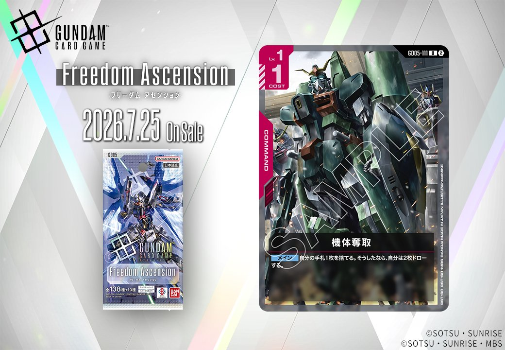
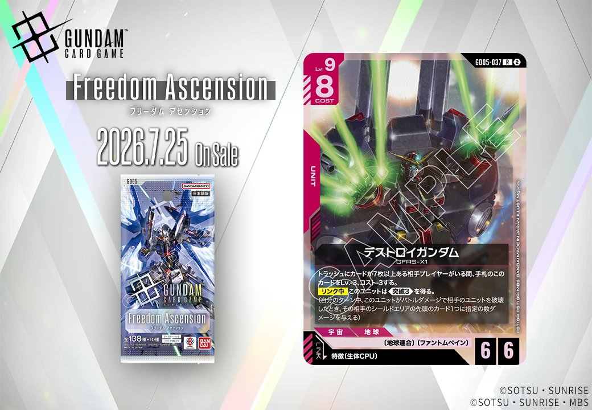

今回はGD05「Freedom Ascension」より、3枚のカードを紹介します。紫のUNIT「サザビー」（GD05-052、「シャア・アズナブル」とのリンクを持つ）、赤のCOMMAND「機体奪取」（GD05-111）、そして特徴に生体CPUを持つPILOTとリンクする赤のUNIT「デストロイガンダム」（GD05-037）が登場し、いずれも2026-07-25発売です。

サザビー (GD05-052)
| 色 | 紫 | タイプ | UNIT |
| Lv | 5 | コスト | 4 |
| AP | 5 | HP | 4 |
| 特徴 | 〔ネオ・ジオン〕 | ||
| リンク条件 | 「シャア・アズナブル」 | ||
効果: 【配備時】このユニット以外の、自分のユニット1つを選んでもよい。それを破壊する。そうしたなら、自分のデッキを上から3枚、自分のトラッシュに置く。この効果でデッキから置いた〔ネオ・ジオン〕のユニットカード1枚を手札に加える。
サザビー(GD05-052)は「シャア・アズナブル」とのリンクを持つCOST4のLv.5ユニットで、2026-07-25発売。【配備時】に自分のユニット1つを破壊してデッキ上3枚をトラッシュに置き、その中の〔ネオ・ジオン〕ユニット1枚を手札に加える能動的な破壊&サーチが特徴です。 自身の効果で破壊するため、ヤクト・ドーガ(GD05-053)のトラッシュ回収や、クェス・パラヤ(GD05-094)の【破壊時】ダメージ軽減など、〔ネオ・ジオン〕の破壊トリガーと噛み合う設計になっています。



機体奪取 (GD05-111)
| 色 | 赤 | タイプ | COMMAND |
| Lv | 1 | コスト | 1 |
効果: メイン 自分の手札1枚を捨てる。そうしたなら、自分は2枚ドローする。
機体奪取(GD05-111)は、コスト1で手札1枚をトラッシュに置くことで2枚ドローできる赤のコマンドです。手札1枚を差し引いても実質1枚増える計算で、手札の質を入れ替えつつ枚数を伸ばせる低コストの補充手段になります。リンクはなく、2026-07-25発売予定です。

デストロイガンダム (GD05-037)
| 色 | 赤 | タイプ | UNIT |
| Lv | 9 | コスト | 8 |
| AP | 6 | HP | 6 |
| 特徴 | 〔地球連合〕、〔ファントムペイン〕、〔生体CPU〕 | ||
| リンク条件 | 特徴に生体CPUを持つPILOT | ||
効果: トラッシュにカードが7枚以上ある相手プレイヤーがいる間、手札のこのカードをLv.3、コスト-3する。【リンク中】このユニットは《突破(3)》を得る。(自分のターン中、このユニットがバトルダメージで相手のユニットを破壊したとき、その相手のシールドエリアの先頭のカード1つに指定の数ダメージを与える)
デストロイガンダム(GD05-037)は、相手のトラッシュが7枚以上ある間、手札のこのカードをLv.3・コスト-3にでき、COST8のユニットを実質的に軽く着地させられる終盤向けの1枚。生体CPUを持つパイロットとのリンク中は《突破(3)》を得て、バトルでユニットを破壊した際にシールド先頭へ追加ダメージを狙える。2026-07-25発売。


関連カード
-
 クェス・パラヤ(GD05-094)NEW紫系 — 同色・共通特徴: ネオ・ジオン（新カード）
クェス・パラヤ(GD05-094)NEW紫系 — 同色・共通特徴: ネオ・ジオン（新カード） -
 ヤクト・ドーガ(クェス専用機)(GD05-053)NEW紫系 — 同色・共通特徴: ネオ・ジオン（新カード）
ヤクト・ドーガ(クェス専用機)(GD05-053)NEW紫系 — 同色・共通特徴: ネオ・ジオン（新カード） -
 サザビー(GD05-049)NEW紫系 — 同色・共通特徴: ネオ・ジオン（新カード）
サザビー(GD05-049)NEW紫系 — 同色・共通特徴: ネオ・ジオン（新カード） -
 シャア・アズナブル(GD05-093)NEW紫系 — 同色・共通特徴: ネオ・ジオン（新カード）
シャア・アズナブル(GD05-093)NEW紫系 — 同色・共通特徴: ネオ・ジオン（新カード） -
 アクシズ(GD05-129)NEW紫系 — 同色・共通特徴: ネオ・ジオン（新カード）
アクシズ(GD05-129)NEW紫系 — 同色・共通特徴: ネオ・ジオン（新カード） -
 ザクⅡ（シャア・アズナブル機）(GD01-026)緑系デッキ内採用率4.2% (195デッキ)
ザクⅡ（シャア・アズナブル機）(GD01-026)緑系デッキ内採用率4.2% (195デッキ) -
 ザクⅡ（シャア・アズナブル機）(ST03-006)緑系デッキ内採用率10.9% (508デッキ)
ザクⅡ（シャア・アズナブル機）(ST03-006)緑系デッキ内採用率10.9% (508デッキ) -
 シャア・アズナブル(ST03-011)緑系デッキ内採用率9% (419デッキ)
シャア・アズナブル(ST03-011)緑系デッキ内採用率9% (419デッキ) -
ザクⅡ（シャア・アズナブル機）(GD01-026_p1)緑系デッキ内採用率0% (0デッキ)
-
ザクⅡ（シャア・アズナブル機）(GD01-026_p2)緑系デッキ内採用率0% (0デッキ)